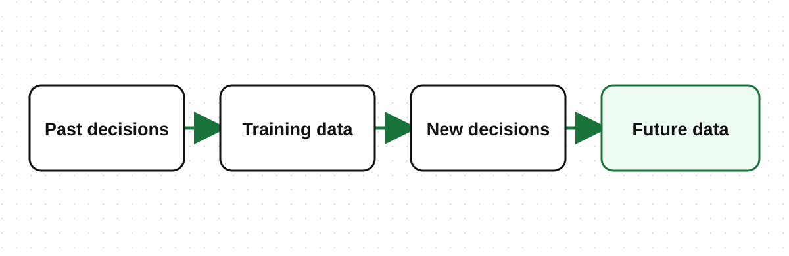

Data may look neutral, but it can contain past human choices and inequalities.
Bias is systematic unfairness that produces unjust results.
Fairness means checking that a decision does not unfairly harm some people or groups.
A company trains a loan model using old loan records. Most previous loans went to people with registered businesses in the city.
Market traders, rural customers, and people running businesses from home received fewer loans. The data therefore contains less information about whether these customers would repay.
The model may repeat the old approval pattern instead of judging every customer fairly.
A customer’s district may also suggest whether the customer lives in an urban or rural area. This is called a proxy variable.
Removing a gender field or another sensitive field does not automatically remove bias. The team must check what the remaining fields may represent.

If a group keeps being rejected, the company receives little new information about that group. Future decisions may then repeat the same problem.
Fairness checks: